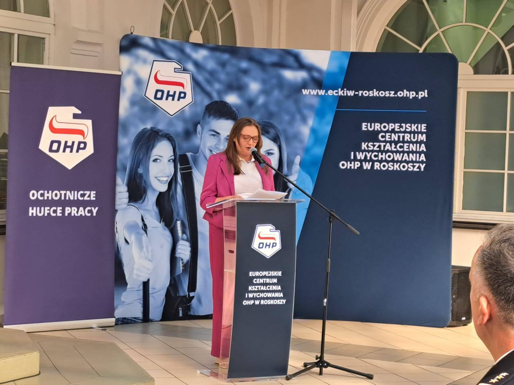
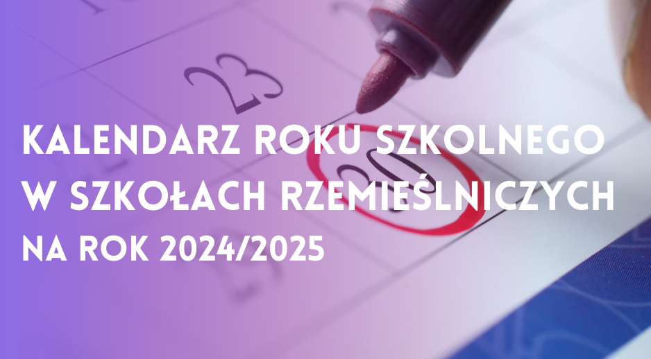

22 września wraz z zaprzyjaźnionym klubem motocyklowym Mad Joker's FG Biała Podlaska sfinalizowaliśmy akcję zainicjowaną przez Prezydenta naszego miasta Michała Litwiniuka.
Zebrane dary przekazaliśmy do Zakład Gospodarki Lokalowej Spółka z o.o. Biała Podlaska.
Dziękujemy wszystkim zaangażowanym za pomoc.

Dzięki wieloletniej współpracy z Europejskim Centrum Kształcenia i Wychowania OHP w Roskoszy zostaliśmy zaproszeni na Inaugurację Roku Szkoleniowego 2024/2025, która odbyła się 18 września 2024 roku.
Po części oficjalnej młodzież uczestniczyła w pokazie pierwszej pomocy.
Ta uroczystość była połączona z IV edycją „Biegu Roskosznego Junaka”. Najlepiej wypadła uczennica 1 klasy Branżowej Szkoły Rzemieślniczej, zdobywając 3 miejsce.

Galeria zdjęć z rozpoczęcia roku szkolnego 2024/2025.

Kalendarz roku szkolnego 2024/2025 w Szkołach Rzemieślniczych
.jpg)
Coś się kończy i coś zaczyna. Podczas uroczystego zakończenia roku szkolnego, ze smutkiem pożegnaliśmy absolwentów klasy 3BSR i z radością
rozpoczęliśmy wakacje.
.jpg)
Wszytko co dobre szybko się kończy. Tak właśnie dobiegła końca 21 wymiana międzynarodowa uczniów z zaprzyjaźnionej szkoły Berufskolleg
Rheine des Kreises Steinfurt. Podczas wieczornej kolacji podsumowalismy staż i wspominaliśmy minione 2 tygodnie.
.jpg)
Dziś spokojniej ale niemniej miło. Wraz z naszymi gośćmi byliśmy dziś w Europejskim Centrum Kształcenia i Wychowania OHP w Roskoszy, gdzie zwiedzaliśmy
Wioskę Ginących Zawodów. Uczniowie mieli okazję zobaczyć pracownie tkacza, kowala, rymarza, piekarza i cukiernika.
{kind=link}
{kind=link}